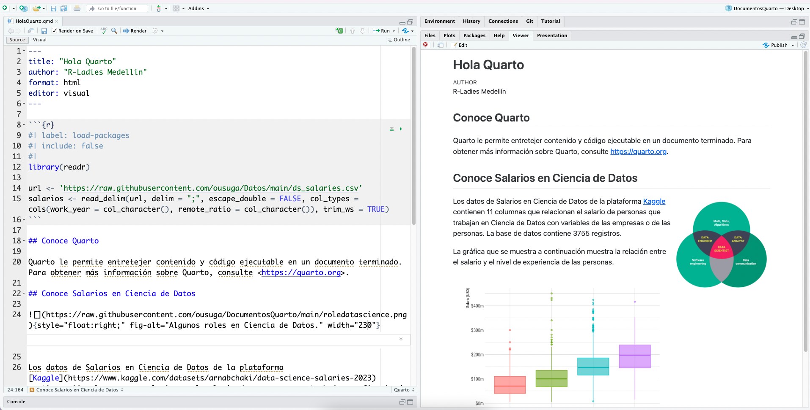
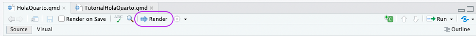

install.packages(readr)
install.packages(ggplot2)
install.packages(hrbrthemes)
install.packages(scales)Tutorial: Hola, Quarto
Descripción General
Quarto es una versión multilenguaje de próxima generación de R Markdown de RStudio e incluye docenas de nuevas funciones y capacidades, al mismo tiempo que puede procesar la mayoría de los archivos Rmd existentes sin modificaciones.
En este tutorial, mostraremos cómo usar RStudio con Quarto. Al editar el código y el markdown en RStudio tal como se haría con cualquier documento computacional (por ejemplo, R Markdown) se obtendrá una vista previa del documento renderizado en la pestaña Visor mientras se trabaja.
El siguiente es un documento en Quarto con la extensión .qmd (a la izquierda) junto con su versión renderizada como HTML (a la derecha). También puede elegir renderizarlo en otros formatos como PDF, MS Word, etc.

Si deseas seguir este tutorial en su propio entorno, sigue los pasos que se describen a continuación.
- Descargue e instale la última versión de RStudio:
Para el ejemplo que mostraremos se deben instalar los paquetes
readr,ggplot2,hrbrthemesyscales.Descargue el documento Quarto
(.qmd), a continuación, ábralo en RStudio y haga clic en .
.
Renderizar
Use el botón Render en el IDE RStudio para renderizar el archivo y obtener una vista previa de la salida con un sólo click o un atajo de teclado (Windows:Ctrl+Shift+K ó Mac:⇧⌘K).

Si prefiere renderizar automáticamente cada vez que guarda, puede marcar la opción Renderizar al guardar en la barra de herramientas del editor. La vista previa se actualizará cada vez que vuelva a renderizar el documento. La vista previa en paralelo funciona tanto para salidas HTML como PDF.
Tenga en cuenta que los documentos también se pueden representar desde la consola R a través del paquete quarto:
install.packages("quarto")
quarto::quarto_render("hello.qmd")Al renderizar, Quarto genera un nuevo archivo que contiene texto, código y resultados seleccionados del archivo .qmd. El nuevo archivo puede ser un documento HTML, PDF, MS Word, una presentación, un sitio web, un libro, un documento interactivo u otro formato.
Autoría
En la imagen de abajo podemos ver el mismo documento en los dos modos del editor de RStudio: visual (a la izquierda) y fuente (a la derecha). El editor visual de RStudio ofrece una experiencia de creación WYSIWYMpara Markdown. Para dar formato (por ejemplo, texto en negrita) puede usar la barra de herramientas, un método abreviado de teclado (Windows:Ctrl+B ó Mac:⌘B) o la construcción Markdown (negrita). El código fuente de texto sin formato subyacente al documento está escrito para usted y puede verlo/editarlo en cualquier momento cambiando al modo fuente para editarlo. Puede alternar entre estos dos modos haciendo clic en Fuente y Visual en la barra de herramientas del editor.
A continuación, dirijamos nuestra atención al contenido de nuestro documento Quarto. El archivo contiene tres tipos de contenido: un encabezado YAML, fragmentos de código y texto de markdown.
Encabezado YAML
Un encabezado YAML (opcional) delimitado por tres guiones (---) en cada extremo.
---
title: "Hola, Quarto"
format: html
editor: visual
---Cuando renderizamos, el title, "Hola, Quarto", aparecerá en la parte superior del documento renderizado con un tamaño de fuente más grande que el resto del documento. Los otros dos campos YAML indican que la salida debe estar en html format y el documento debe abrirse en el editor visual, de manera predeterminada.
La sintaxis básica de YAML utiliza pares clave-valor en el formato key: value. Otros campos YAML que se encuentran comúnmente en los encabezados de los documentos incluyen metadatos como author, subtitle, date y opciones de personalización como theme, fontcolor, fig-width, etc. Se puede obtener información sobre todos los campos YAML disponibles para documentos HTML aquí. Los campos YAML disponibles varían según el formato del documento, consulte aquí los campos YAML para documentos PDF y aquí para MS Word.
Fragmentos de código
Fragmentos de código R identificados con {r} con opciones de fragmento (opcional), en estilo YAML, identificados por #\| al principio de la línea.
library(readr)
url <- 'https://raw.githubusercontent.com/ousuga/Datos/main/ds_salaries.csv'
salarios <- read_delim(url, delim = ";", escape_double = FALSE, col_types = cols(work_year = col_character(), remote_ratio = col_character()), trim_ws = TRUE)En este caso, label del fragmento de código es load-packages y establecemos include en false para indicar que no queremos el fragmento en sí ni ninguna de sus salidas en los documentos representados.
Además de renderizar el documento completo para ver los resultados de los fragmentos de código, también puede ejecutar cada fragmento de código de forma interactiva en el editor de RStudio haciendo clic en el icono o en el método abreviado de teclado (⇧⌘⏎). RStudio ejecuta el código y muestra los resultados en línea dentro de su archivo o en la consola, según su preferencia.
Texto markdown
Texto con formato, incluidos encabezados de sección, hipervínculos, una imagen incrustada y un fragmento de código en línea.
Quarto utiliza la sintaxis de markdown para el texto. Si usa el editor visual, no necesitará aprender mucha sintaxis de markdown para crear su documento, ya que puede usar los menús y accesos directos para agregar un encabezado, texto en negrita, insertar una tabla, etc. Si usa el editor de código fuente, puede conseguirlos con expresiones de markdown como ##, **bold**, etc.
Cómo funciona Quarto?
Cuando se renderiza un documento Quarto, primero knitr ejecuta todos los fragmentos de código y crea un nuevo documento de markdown (.md) que incluye el código y su salida. El archivo de markdown generado es luego procesado por pandoc, que crea el formato terminado. El botón Render encapsula estas acciones y las ejecuta en el orden correcto para usted.

Siguiente
Los siguientes tutoriales exploran Quarto con mayor profundidad